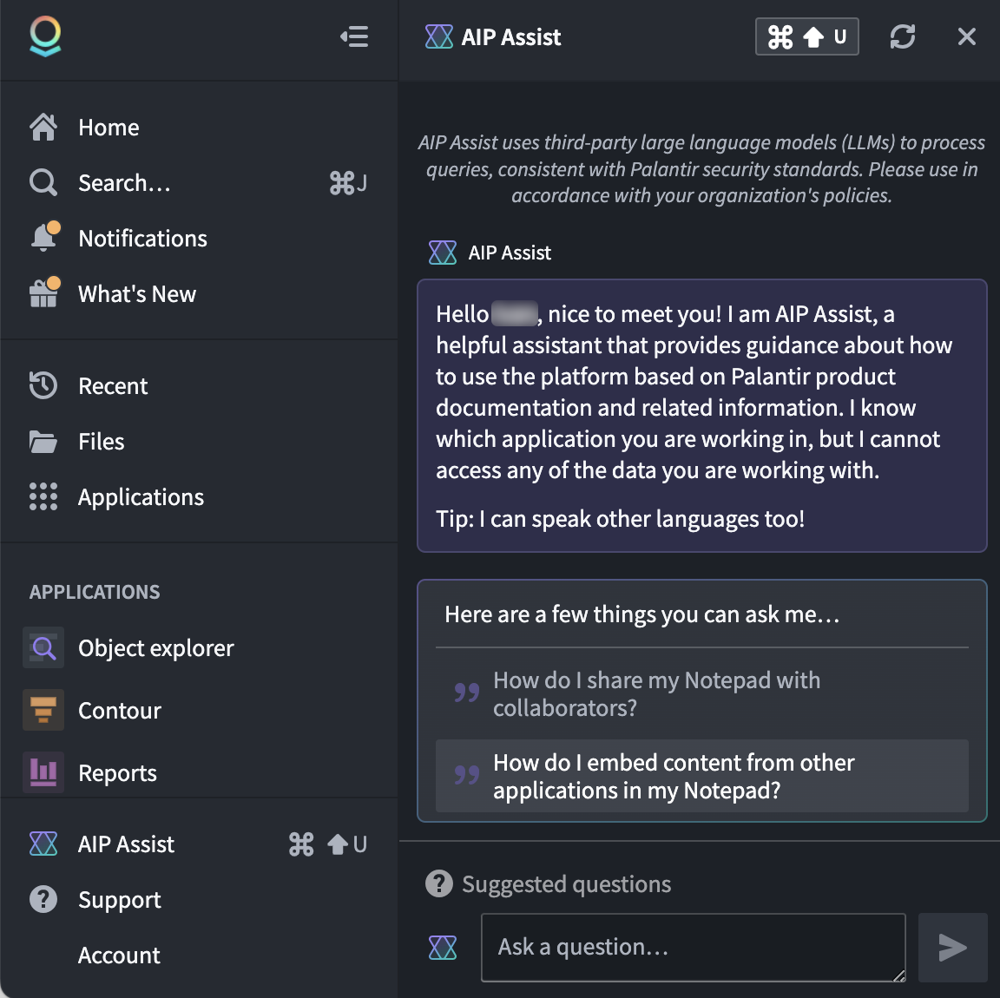
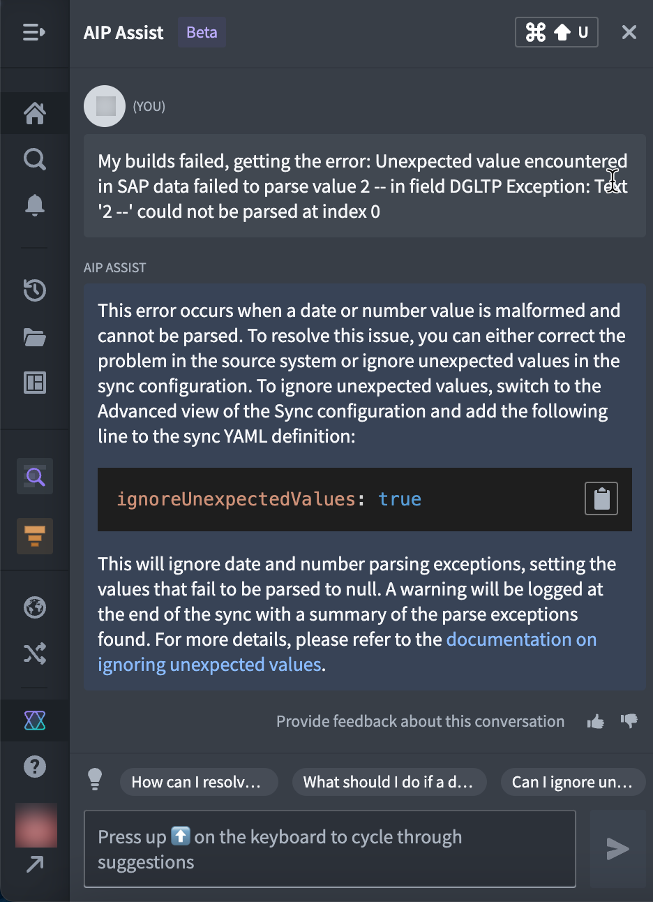
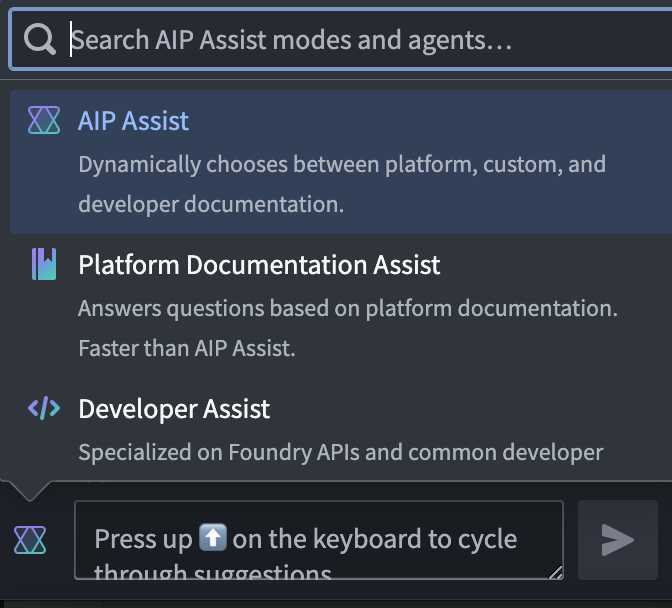

AIP Assist is an LLM-powered support tool designed to help users navigate, understand, and generate value with the Palantir platform. Users can ask AIP Assist questions in natural language and receive real-time help with their queries.
Benefits of using AIP Assist include:
:::callout{theme="neutral"} AIP Assist is only available if your platform administrator has enabled AIP in Control Panel. :::
You can access AIP Assist by selecting it at the bottom of the workspace navigation bar or with a keyboard shortcut (Cmd+Shift+U on MacOS or Ctrl+Shift+U on Windows). AIP Assist will appear in a panel as shown in the screenshot below:

Users can type queries in plain text in the Ask a question... input field. AIP Assist is trained on Palantir's platform documentation and uses Natural Language Processing (NLP) and third-party Large Language Models (LLMs) to parse the user's query and provide the most relevant response, consistent with Palantir's security standards.

AIP Assist provides several pre-configured modes out of the box to provide you with a more tailored experience depending on your workflow. Below is an overview of available modes:

You can add custom content sources and use them to improve the AIP Assist experience. There are currently two methods of adding custom content sources that can be registered with AIP Assist:
documentation type repository in Code Repositories).Refer to registering custom content sources with AIP Assist for more information.
Once a custom source has been created and registered, there are two options for using it to enhance the AIP Assist experience:
Adding a content source to the default AIP Assist knowledge base will include it along with the larger search context that is pre-loaded for AIP Assist on your enrollment. In contrast, AIP Assist chatbots are interactive, LLM-powered assistants that only use the provided custom content source as search context, making them focused, tailor-made support tools for your workflows on the Palantir platform.
Note: AIP feature availability is subject to change and may differ between customers.